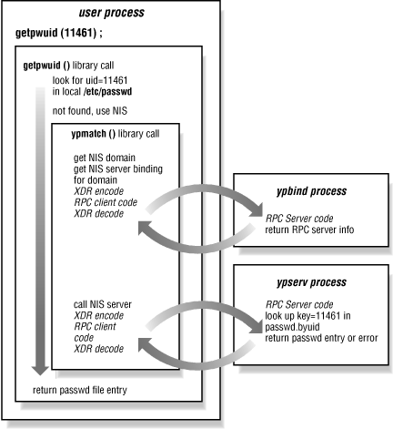

3.4. Trace of a key match
Now we've seen how all of the pieces
of NIS work by themselves. In reality,
of course, the clients and servers must work together with a
well-defined sequence of events. To fit all of the client- and
server-side functionality into a time-sequenced picture, here is a
walk-through the
getpwuid( ) library
call. The
interaction of library routines and NIS daemons is shown in
Figure 3-2.
- A user runs ls -l, and the
ls process needs to find the username
corresponding to the UID of each file's owner. In this case,
ls -l calls
getpwuid(11461) to find the
password file entry -- and therefore username -- for UID
11461.
- The local password file looks
like this:
root:passwd:0:1:Operator:/:/bin/csh
daemon:*:1:1::/:
sys:*:2:2::/:/bin/csh
bin:*:3:3::/bin:
uucp:*:4:8::/var/spool/uucppublic:
The local file is checked first, but there is no UID 11461 in it.
However, /etc/nsswitch.conf has this entry:
passwd: files nis
which effectively appends the entire NIS password map.
getpwuid( ) decides it needs to go to NIS for
the password file entry.
- getpwuid( ) grabs the default domain name, and
binds the current process to a server for this domain. The bind can
be done explicitly by calling an NIS library routine, or it may be
done implicitly when the first NIS lookup request is issued. In
either case, ypbind provides a server binding
for the named domain. If the
default domain is
used, ypbind returns the current binding after
pinging the bound server. However, the calling process may have
specified another domain, forcing ypbind to
locate a server for it. The client may have bindings to several
domains at any time, all of which are managed by the single
ypbind process.
- The client process calls the NIS lookup RPC with
key=11461 and
map=passwd.byuid. The request is bundled up and
sent to the ypserv process on the bound server.
- The server does a DBM key lookup and returns a password file entry,
if one is found. The record is passed back to the
getpwuid( ) routine, where it is returned to the
calling application.

Figure 3-2. Trace of the getpwuid( ) library call
The server can return a number of errors on a lookup request.
Obviously, the specified key might not exist in the DBM file, or the
map file itself might not be present on the server. At a lower level,
the RPC might generate an error if it times out before the server
responds with an error or data; this would indicate that the server
did not
receive
the request or could not process it quickly enough. Whenever an RPC
call returns a timeout error, the low-level NIS RPC routine instructs
ypbind to dissolve the process's binding
for the domain.
NIS RPC calls continue trying the remote server after a timeout
error. This happens transparently to the user-level application
calling the NIS RPC routine; for example,
ls has
no idea that one of its calls to
getpwuid( )
resulted in an RPC timeout. The
ls command just
patiently waits for the
getpwuid( ) call to
return, and the RPC code called by
getpwuid( )
negotiates with
ypbind to get the domain rebound
and to retry the request.
Before retrying the NIS RPC that timed out, the client process
(again, within some low-level library code) must get the domain
rebound. Remember that
ypbind keeps track of its
current domain binding, and returns the currently bound server for a
domain whenever a process asks to be bound. This theory of operation
is a little too simplistic, since it would result in a client being
immediately rebound to a server that just caused an RPC timeout.
Instead,
ypbind does a health check by pinging
the NIS server before returning its name for the current domain
binding. This ensures that the server has not crashed or is not the
cause of the RPC failure. An RPC timeout could have been caused when
the NIS packet was lost on the network or if the server was too
heavily loaded to promptly handle the request. NIS RPC calls use the
UDP protocol, so the network transport layer makes no guarantees
about delivering NIS requests to the server -- it's
possible that some requests never reach the NIS server on their first
transmission. Any condition that causes an RPC to time out is
hopefully temporary, and
ypbind should find the
server responsive again on the next ping.
ypbind
will try to reach the currently bound server for several minutes
before it decides that the server has died.
When the server health check fails,
ypbind
broadcasts a new request for NIS service for the domain. When a
binding is dissolved because a host is overloaded or crashes, the
rebinding generally locates a different NIS server, effecting a
simple load balancing scheme. If no replies are received for the
rebinding request, messages of the form:
NIS server not responding for domain "nesales"; still trying
appear on the console as
ypbind continues
looking for a server. At this point, the NIS client is only partially
functional; any process that needs information from an NIS map will
wait on the return of a valid domain binding.
Most processes need to check permissions using UIDs, find a hostname
associated with an IP address, or make some other reference to
NIS-managed data if they are doing anything other than purely
CPU-bound work. A machine using NIS will not run for long once it
loses its binding to an NIS server. It remains partially dead until a
server appears on the network and answers
ypbind
's broadcast requests for service. The need for
reliable NIS service cannot be stressed enough. In the next chapter,
we'll look at ways of using and configuring the service
efficiently.
 |  |  |
| 3.3. Files managed under NIS |  | 4. System Management Using NIS |